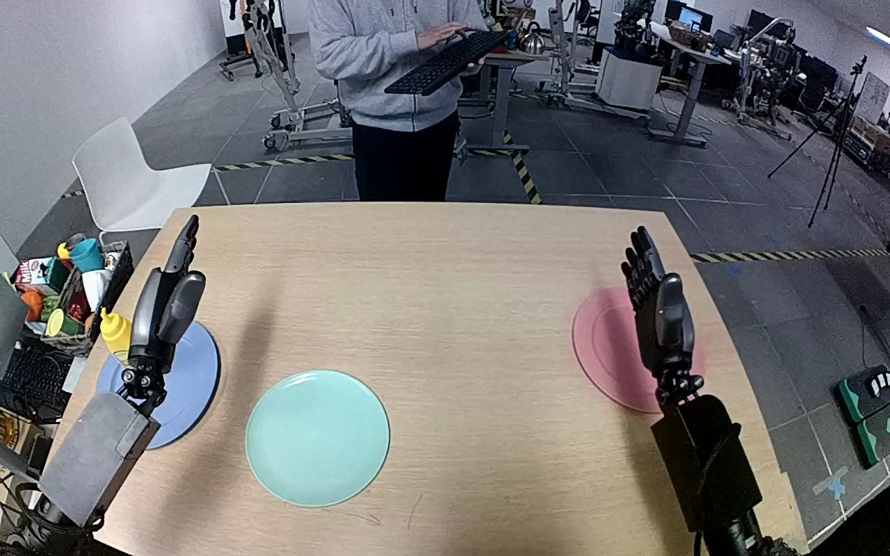

NVIDIA GR1 · 63
Video 63

Visual review action_review.json
{
"prompt_protocol": "humanoid_action_v1",
"prompt_provenance": "visually_authored_from_video_and_initial_frame",
"reviewed_contact_sheets": [
"sheet_001.jpg"
],
"inspected_frame_stride": 2,
"inspected_sampled_frame_count": 60,
"initial_scene": "A yellow squeeze mustard bottle stands on the blue plate at the robot's left; an empty pale turquoise plate is ahead and inward. Both robot forearms and open dexterous hands enter from the near side of the table. A pink plate is near the right hand; a person across the table does not touch the robot or task objects.",
"observed_sequence": [
{
"start_frame": 0,
"end_frame": 57,
"action": "The left hand moves outward and downward beside the upright mustard bottle on the blue plate, reorienting its open palm and fingers around the bottle. The right hand remains open over the pink-plate area with small pose changes and no task contact.",
"confidence": "high"
},
{
"start_frame": 58,
"end_frame": 75,
"action": "The left hand moves around the bottle body and closes its thumb and fingers to secure it; the bottle begins rising from the blue plate.",
"confidence": "high"
},
{
"start_frame": 76,
"end_frame": 97,
"action": "The left hand lifts the bottle clear and transports it inward toward the pale turquoise plate while maintaining a near-upright grip. The blue plate is left empty.",
"confidence": "high"
},
{
"start_frame": 98,
"end_frame": 113,
"action": "The left hand centers and lowers the upright bottle onto the turquoise plate while its fingers remain around the body.",
"confidence": "high"
},
{
"start_frame": 114,
"end_frame": 119,
"action": "The left fingers and thumb open away from the bottle; the bottle remains upright on the turquoise plate at the final frame. The open left hand remains immediately beside it.",
"confidence": "high"
}
],
"arm_hand_roles": {
"left": "Sole manipulating hand: surrounds and grips the bottle body, lifts from the blue plate, transports and lowers onto the turquoise plate, and opens to release.",
"right": "Open idle hand, with minor repositioning above the pink-plate side. Does not grasp, support, stabilize, or receive the bottle.",
"coordination": "One-hand transfer between plates; no hand-to-hand transfer, two-hand support, person interaction, or locomotion is visible."
},
"anatomical_side_evidence": "The camera looks forward over two forearms extending from the near/bottom side toward the tabletop. The active forearm extends from the robot's left near side; the two mirrored hands have inward-facing thumbs (the active hand's thumb faces toward the center/right and the opposite hand's toward center/left). This arm orientation and thumb anatomy support robot-relative left/right, rather than assigning side solely from image position. Shoulders and torso are outside the image.",
"evidence_frame_indices": [
0,
16,
64,
74,
82,
96,
112,
116,
119
],
"native_initial_png_inspected": true,
"inspection_coverage": "Viewed the sole contact sheet covering all 60 sampled source frames 0 through 118 at stride 2, plus native source first-frame PNG and native frames 16, 64, 74, 82, 96, 112, 116, and 119. Native views resolve pregrasp, grasp/lift, transport, placement and release.",
"terminal_state": "The yellow mustard bottle stands upright on the pale turquoise plate. The left hand is visibly open immediately beside the bottle after release; the blue source plate is empty. The right hand remains away from the bottle.",
"uncertainties": [
"The exact instant of bottle-base contact is partly occluded by the left hand; the subsequent upright bottle on the plate and visibly opened hand establish placement and release."
],
"annotation_discrepancies": [],
"selected_execution_status": "success",
"video_id": "63",
"dataset": "NVIDIA_GR1_100",
"dedicated_review_agent": "review_gr1_63",
"review_source_video": "NVIDIA_GR1_100/63/original/original.mp4",
"source_frame_count": 120,
"source_fps": 20.0,
"native_detail_frames": [
16,
64,
74,
82,
96,
112,
116,
119
],
"world_model_prompt": "The robot closes its left hand around the yellow mustard bottle standing on the blue plate and lifts it clear. It carries the bottle to the pale turquoise plate, lowers it upright onto the plate, and opens its fingers to release it. Keep the camera fixed; preserve robot geometry, physically valid joint motion, and normal gripper opening and closing.",
"original_task_instruction": "Use the left hand to pick up yellow mustard bottle from baby blue plate to pale turquoise plate.",
"selected_segment": {
"start_frame": 0,
"end_frame_exclusive": 120,
"reason": "Complete original single-task reference; no cropping or trimming requested."
},
"source_video_sha256": "e54c50f6b7636e17074d5bb760849feeecc5fa90cf068b502037d278e7cb661e",
"review_completed_at": "2026-10-13T18:22:23.974941+00:00"
}